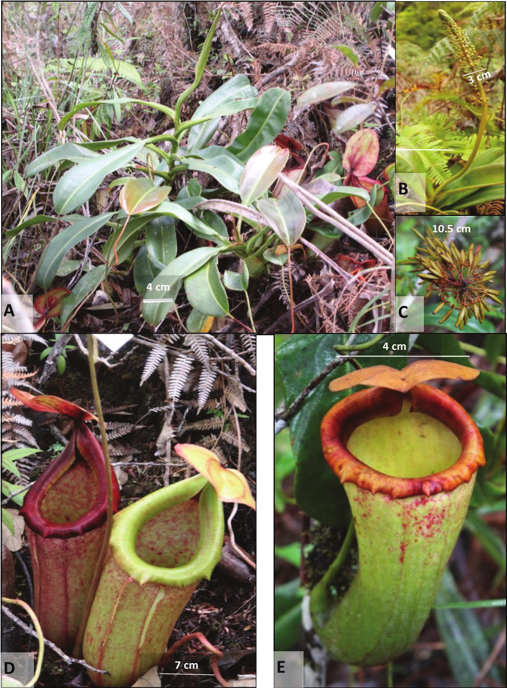
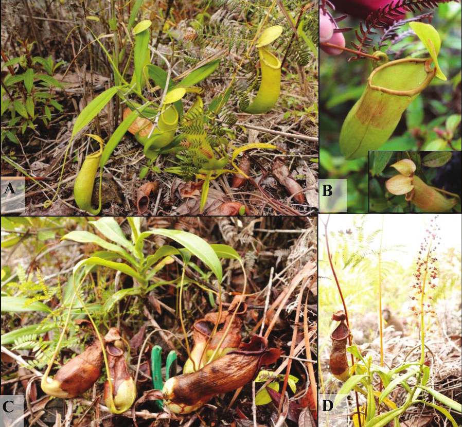
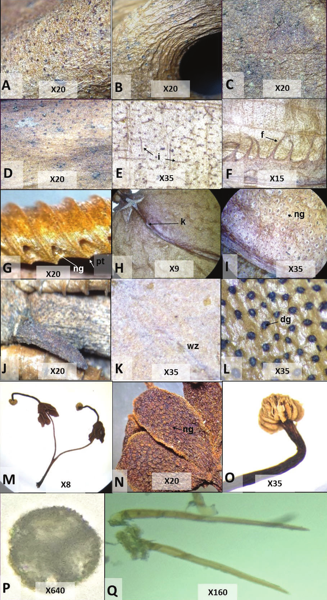

Philippine Journal of Science June 2017 146(2): 159-165
Two New Nepenthes Species from the Unexplored Mountains of Central Mindanao, Philippines
Noel E. Lagunday, Florfe M. Acma, Veneracion G. Cabana, Novo M. Sabas, Victor B. Amoroso
Abstract
Full text
Full text is available as a scanned copy of the original print version.
Get a printable copy (PDF file) of the
complete article, or click on a page image below to browse page by page.
Links are also available for
Selected References.
Images in this article

Figure 1 Photographs of N. malimumuensis. (A) Plant habit, (B) young male inflorescence, (C) infructescence, (D) lower pitchers (E) upper pitchers. Photos by Adeline Calaguian (A,D), Harold C. Armecin (C,E), and N.E. Lagunday (B).
Figure 2 Photomicrographs of Nepenthes malimumuensis. (A) leaf adaxial, (B,C) leaf abaxial, (D,E) fringed wing (F) pitcher exterior covered with indumenta, (G,H) peristome, (I) peristome inner margin, (J,K) lid nectar glands, (L) pubescent lid spur; (M) digestive zone, (N,O) waxy zone, (P-R) female flower, (Q) tepal, (R) flower covered with indumenta, (S,T) seeds, (U) indumenta; f - filamentous fringe, i - indumentum, ng - nectar gland, pt - peristome teeth, w– wing, c - capsule, dg - digestive gland, i - indumenta, pb - pseudobranch, s - seed, sw - seed filiform wing, wz - waxy zone.

Figure 3 Photographs of N. manobo. (A) Plant habit with upper pitchers, (B) upper pitcher with two lids (anomalous growth), (C) rosette stem with lower pitchers, (D) plant habit with an upper pitcher and a male inflorescence. Photos by N.E Lagunday (A,C,D) and Harold C. Armecin (B).

Figure 4 Photomicrographs of Nepenthes manobo. (A) stem, (B) tendril covered with sparse indumenta, (C) leaf adaxial, (D) leaf abaxial, (E) pitcher exterior covered with indumenta, (F) fringed wing, (G) peristome teeth, (H, I) lid nectar glands, (J) lid spur, (K) waxy zone, (L) digestive zone, (M-O) male flower, (N) tepal, (O) floret bearing the pollen, (P)trilete pollen, (Q) indumenta without pseudo- branches; f - filamentous fringe, i - indumenta, ng - nectar gland, dg - digestive gland, k - keel, pt - peristome teeth, wz - waxy zone.